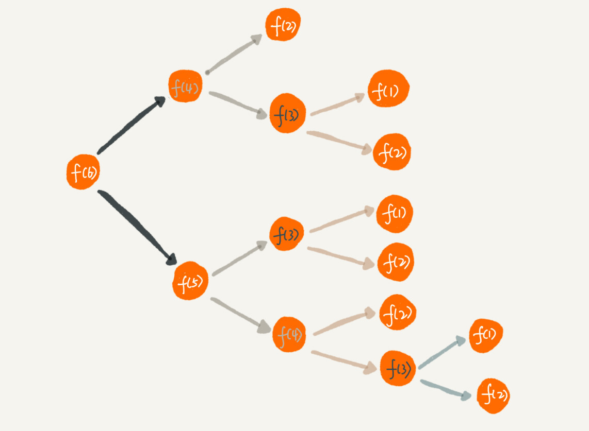

递归学习摘记
- 递归，就是在运行的过程中调用自己，是一种应用非常广泛的算法（或者编程技巧）。
- 递归条件：
- 一个问题的解可以分解为几个子问题的解。
- 这个问题与分解之后的子问题，除了数据规模不同，求解思路完全一样。
- 存在递归终止条件。
- 递归关键：
- 写出递推公式，找到终止条件。
- 找到如何将大问题分解为小问题的规律，并且基于此写出递推公式，然后再推敲终止条件，最后将递推公式和终止条件翻译成代码。
- 如果一个问题 A 可以分解为若干子问题 B、C、D，可以假设子问题 B、C、D 已经解决，在此基础上思考如何解决问题 A。 而且，只需要思考问题 A 与子问题 B、C、D 两层之间的关系即可，不需要一层一层往下思考子问题与子子问题，子子问题与子子子问题之间的关系。屏蔽掉递归细节。 只要遇到递归，就把它抽象成一个递推公式，不用想一层层的调用关系，不要试图用人脑去分解递归的每个步骤。
- 递归注意点
- 递归代码要警惕堆栈溢出。
- 通过在代码中限制递归调用的最大深度的方式来解决这个问题。
- 当递归调用超过一定深度（比如 1000）之后，我们就不继续往下再递归了，直接返回报错。
- 最大允许的递归深度跟当前线程剩余的栈空间大小有关，事先无法计算。如果实时计算，代码过于复杂，就会影响代码的可读性。 所以，如果最大深度比较小，比如 10、50，就可以用这种方法，否则这种方法并不是很实用。
- 通过在代码中限制递归调用的最大深度的方式来解决这个问题。
- 递归代码要警惕重复计算。

- 可以通过一个数据结构（比如散列表）来保存已经求解过的 f(k)。当递归调用到 f(k) 时，先看下是否已经求解过了。 如果是，则直接从散列表中取值返回，不需要重复计算。
- 在时间效率上，递归代码里多了很多函数调用，当这些函数调用的数量较大时，就会积聚成一个可观的时间成本。
- 在空间复杂度上，因为递归调用一次就会在内存栈中保存一次现场数据，所以在分析递归代码空间复杂度时，需要额外考虑这部分的开销。
- 递归代码要警惕堆栈溢出。
- 递归代码改写为非递归代
// 递归 func f(n int) int { if n == 1 || n == 2 { return n } return f(n-1) + f(n-2) } // 非递归 func f(n int) int { if n == 1 || n == 2 { return n } ret, pre, prepre := 0, 2, 1 for i := 3; i <= n; i++ { ret = pre + prepre prepre = pre pre = ret } return ret }- 因为递归本身就是借助栈来实现的，只不过使用的栈是系统或者虚拟机本身提供的。 如果在内存堆上实现栈，手动模拟入栈、出栈过程，这样任何递归代码都可以改写成看上去不是递归代码的样子。 但是这种思路实际上是将递归改为了“手动”递归，本质并没有变，而且也并没有解决前面讲到的某些问题，徒增了实现的复杂度。
- 递归调试: 1.打印日志发现，递归值。 2.结合条件断点进行调试。